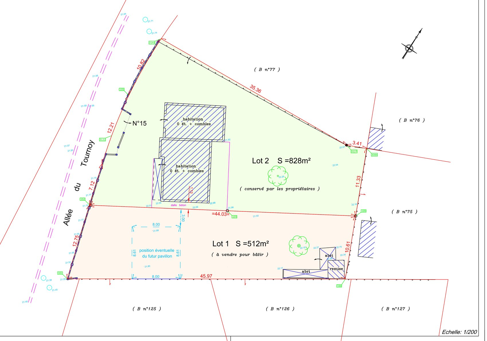
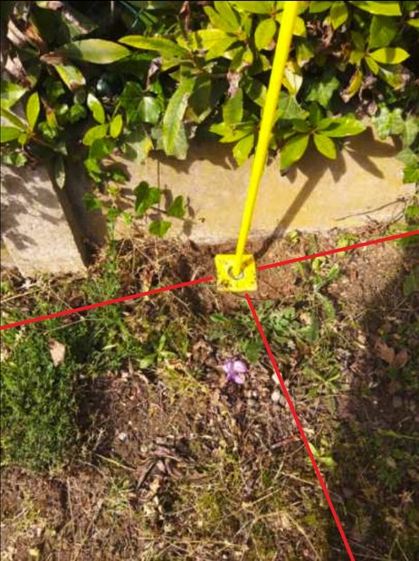
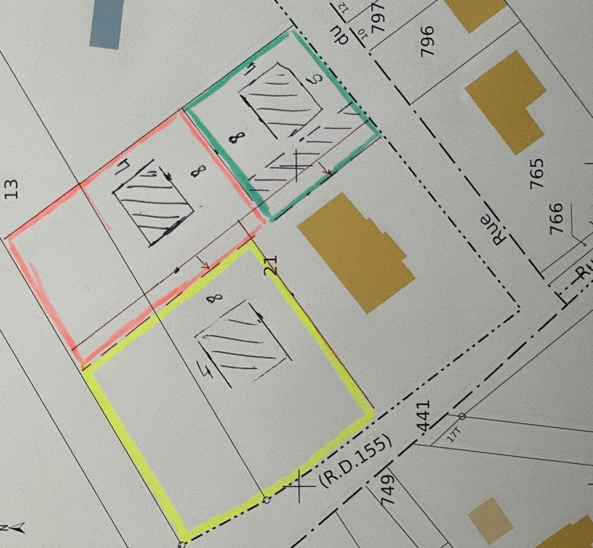
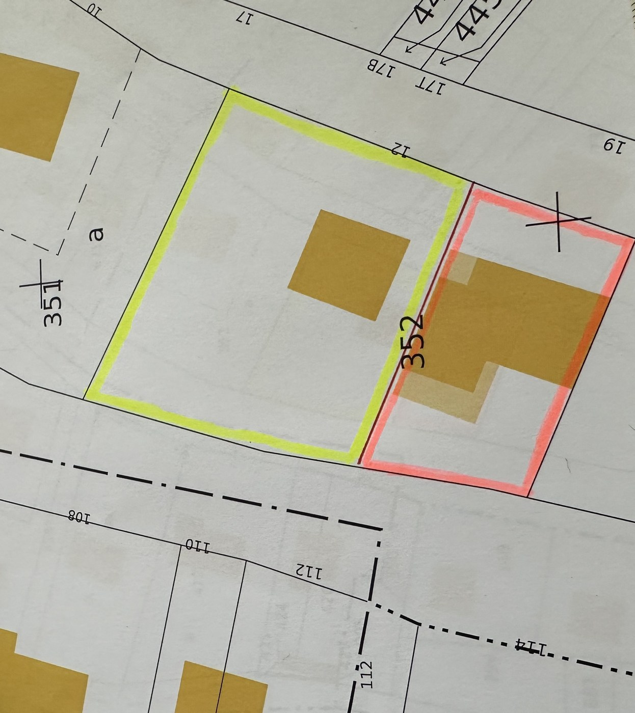
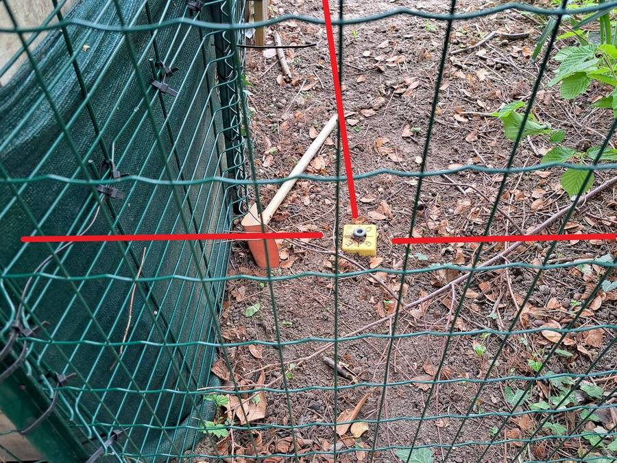
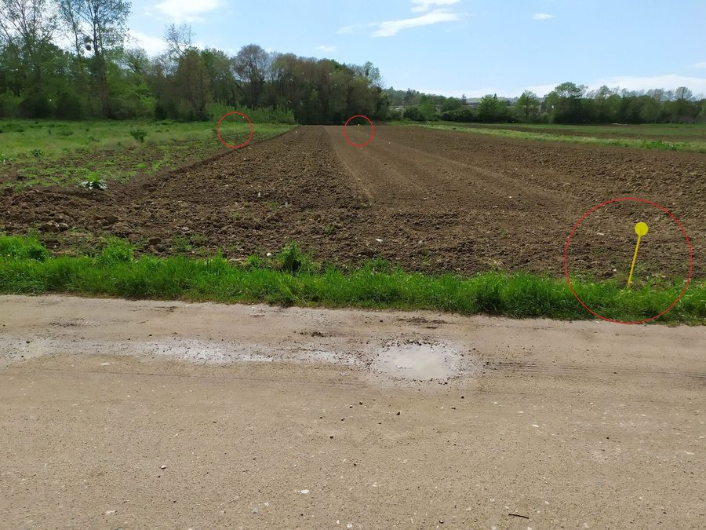
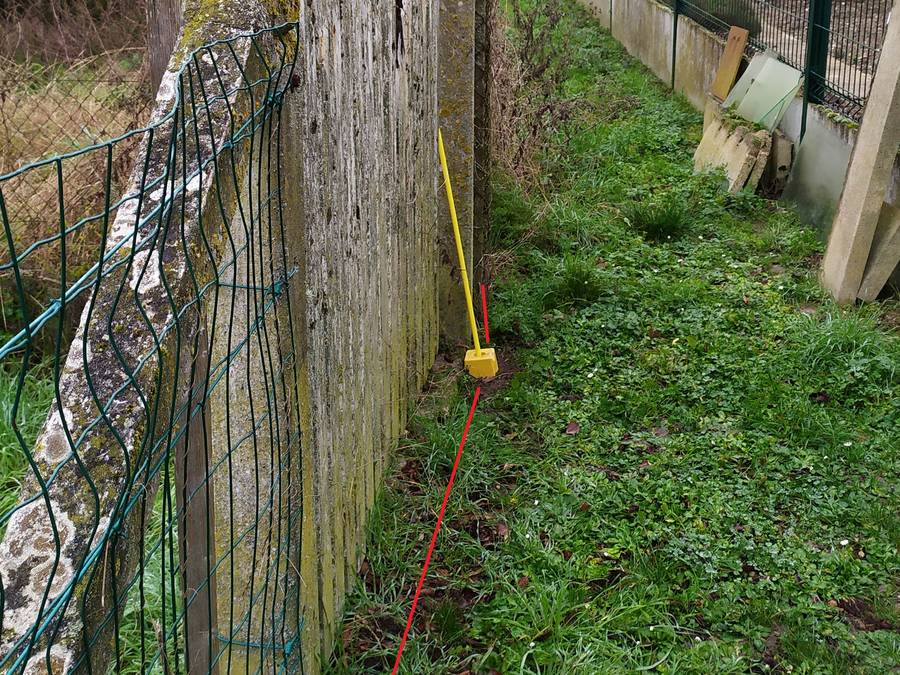
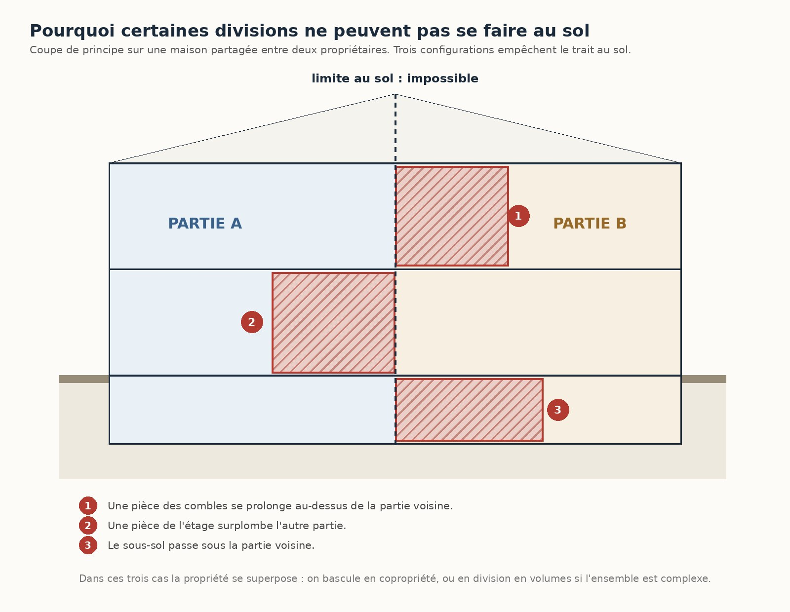

On ne divise pas un terrain dont on ignore les limites
Le trait de division est la dernière chose que l'on trace, pas la première. Avant lui, il faut un levé du terrain et une limite certaine.
Le levé relève l'existant : les clôtures, les murs, les bâtiments, les arbres, les réseaux visibles, les niveaux. C'est le fond de plan sur lequel tout le reste s'appuie.
Le bornage fixe contradictoirement la limite avec les voisins et la matérialise par des bornes. Sans lui, la superficie annoncée du lot détaché n'est qu'une estimation — et la première contestation de voisinage remet la division en cause.
Puis seulement la division : le trait, les surfaces de chaque lot, et la pose des bornes de la nouvelle limite intérieure.
Un plan de division


Diviser pour bâtir, diviser du bâti existant
Deux situations qu'on confond souvent, et qui n'obéissent pas aux mêmes règles. Le plan cadastral les distingue d'un coup d'œil.


Cette distinction change le dossier. Pour un lot à bâtir, tout se joue sur le règlement d'urbanisme : la superficie, l'accès, la façade sur voie, l'implantation, les réseaux — c'est lui qui dit si le lot est constructible et sous quelle forme.
Pour la division d'un bâti existant, la plupart des règles du plan local d'urbanisme visent la construction neuve et ne trouvent pas à s'appliquer. Une contrainte demeure pourtant, et c'est celle qui bloque le plus de dossiers : le stationnement. Réserve utile : certaines communes ont délibéré pour soumettre les divisions à déclaration préalable sur tout ou partie de leur territoire — cela se vérifie commune par commune.
Lire la publication d'origine sur LinkedIn →
Le parcours en urbanisme — déclaration préalable, permis d'aménager ou permis valant division — est détaillé sur la page Division en vue de construire.
Quel mode de division ?
C'est le premier arbitrage, et il commande tout le reste. Il se décide sur le terrain, en regardant comment les bâtiments et les usages s'organisent.
- La division parcellaireDeux parcelles distinctes, deux propriétés indépendantes. C'est le cas le plus simple : chaque lot se tient, avec son accès et ses réseaux propres. Elle donne lieu à un document d'arpentage et à de nouveaux numéros au cadastre.
- La copropriétéElle s'impose dès que les bâtis s'enchevêtrent et qu'aucun trait au sol ne peut les séparer proprement. On établit alors un état descriptif de division, avec les lots privatifs, les parties communes et les tantièmes.
- La division en volumesPour les ensembles immobiliers complexes, où des propriétés se superposent — un parking en sous-sol, des commerces au rez-de-chaussée, des logements au-dessus. Chaque volume est défini en plan et en altitude.
Les servitudes se règlent au moment de la division
C'est le moment où tout est encore possible. Une fois les lots vendus séparément, il faut l'accord de gens qui n'ont plus d'intérêt commun.
Une division crée presque toujours des sujétions entre les deux lots : un accès qui traverse l'un pour desservir l'autre, des réseaux — eau, électricité, assainissement — qui passent sous le lot voisin, une vue, un écoulement d'eaux pluviales, une cour ou un mur restés communs.
Chacune se décrit, se situe sur le plan et se rédige. Ce qui n'a pas été prévu à la division devient, quelques années plus tard, un litige entre deux voisins qui ne se connaissent pas.
Ce que la division déclenche en urbanisme
Diviser un terrain pour y bâtir n'est pas un acte purement privé. Selon le projet et le lieu, l'opération relève du régime des lotissements et suppose une autorisation : une déclaration préalable dans les cas les plus simples, un permis d'aménager lorsque le projet crée des voies ou des espaces communs, lorsque le projet crée des voies, des espaces ou des équipements communs à plusieurs lots.
Nouveau : jusqu'au 27 septembre 2026, un terrain situé en secteur protégé — abords d'un monument historique, site patrimonial remarquable, site classé — bascule automatiquement en permis d'aménager. Le décret n° 2026-674 du 27 juillet 2026 supprime ce cas pour les demandes déposées à compter du 28 septembre 2026 : le critère des équipements communs devient alors le seul. L'avis de l'architecte des Bâtiments de France, lui, reste requis.
D'autres divisions échappent à ce régime, notamment lorsqu'il n'y a pas d'intention de bâtir sur le lot détaché.
Cette qualification se vérifie avant de diviser : elle détermine la procédure, les délais et parfois la faisabilité même du projet.
Le « permis de diviser ». Une commune peut soumettre à autorisation préalable la division d'un logement existant en plusieurs logements, dans un périmètre qu'elle délimite (article L.126-17 du Code de la construction et de l'habitation). À ce jour, nous n'en avons pas rencontré dans notre secteur d'intervention — le dispositif existe néanmoins, et se vérifie commune par commune.
Sur le terrain



Division au sol ou copropriété ?
Toute division ne peut pas se régler par un trait au sol. Dès que les volumes bâtis se superposent, la limite ne peut plus être verticale — et le régime change.

C'est le premier arbitrage d'un dossier de division, et il ne se décide pas sur plan : il se décide en visitant les lieux, en regardant comment les pièces, les combles et les sous-sols s'organisent réellement de part et d'autre.
Tant que chaque partie peut être séparée par un trait au sol, avec son accès et ses réseaux propres, la division parcellaire reste préférable : deux propriétés indépendantes, sans syndic, sans charges communes, sans assemblée générale.
Dès qu'un seul de ces trois cas se présente, il faut basculer en copropriété — ou en division en volumes si l'ensemble est complexe et que des fonctions hétérogènes se superposent.
Les questions qu'on nous pose
Faut-il obligatoirement borner avant de diviser ?
Diviser suppose de connaître les limites de l'unité foncière : c'est la condition d'une superficie exacte. Et pour la vente d'un lot de lotissement — ou d'un terrain issu d'une zone d'aménagement concerté ou d'un remembrement — le descriptif du terrain vendu doit résulter d'un bornage ; pour les autres terrains à bâtir, l'acte doit indiquer si un bornage a été fait. Nous vous dirons, au vu de votre dossier, ce que votre situation exige.
Combien de lots peut-on créer ?
Cela ne dépend pas de la superficie seule, mais du règlement d'urbanisme applicable : accès, façade sur voie, implantation, emprise au sol, stationnement, espaces de pleine terre. Deux terrains de même taille, dans deux communes voisines, ne se divisent pas de la même façon.
Mon terrain est-il divisible ?
C'est la première question que nous instruisons, avant tout devis de division : nature du bien, accès, réseaux, règlement du plan local d'urbanisme, servitudes existantes, protections particulières. La réponse est parfois non — il vaut mieux le savoir avant d'avoir engagé la vente.